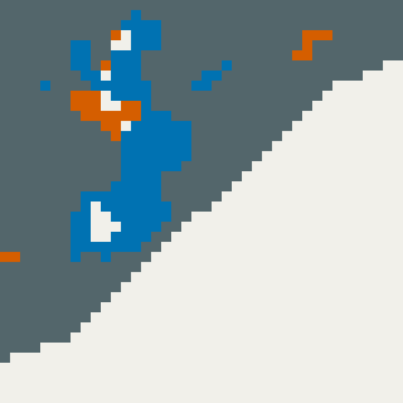

海底的草地，
變少了嗎？
逐幀檢視 · 24 fps
正在載入照片、地圖與來源資料。

放大之後，看見的是格子。


10公尺，說的是地圖有多細。
不是每株海草都看得清。
右圖放大原始分類格子，沒有補出新細節。網格與處理方式另見來源說明。
前期資料標示的海草範圍
2019–2020

 北
北Tampa Bay · 同一範圍與方向
留白是資料未標示的區域，不能直接當作現地沒有海草。
模型會一起看周圍的影像。
中心位置的
影像特徵
再參考
推估水深
向專家整理的參考標記學習
深度學習分類器
20×20影像窗依公開程式結構示意；格子顏色不是作者影像、模型注意力或信心值。
分得對不對，要另外檢查。
地圖分類
標示為海草？獨立參考資料
參考標記是什麼？可能漏判，也可能誤判。
研究另用獨立參考資料評估。本動畫沒有重新驗證分類器；單期分類精度不是變化正確率。
局部的差異，有不同方向。
2019–2020 / 2023–2024

前面定位的40×40格局部，放大顯示。這是公開標示範圍的疊合，不是現地證實的流失／恢復分布。
範圍還在，覆蓋卻可能變稀。
仍有海草，不等於整片消失。
覆蓋概念示意，不表示株數或精確比例。研究的密／疏分析限於熱帶；此圖不是Tampa Bay的量測。
兩期相比，總面積淨減少。
減少的面積新增的面積淨減少
5,969平方公里
作者報告的兩期淨減少量
2019–2020對照2023–2024；限研究可判讀的清澈淺海。數字已扣除新增面積，不是所有消失區域的總和。
熱帶另有海草床，從密集轉稀疏。
6,221平方公里
作者報告的密集轉稀疏面積
不能和淨減少相加成「完全消失」。
僅指熱帶的單方向轉疏面積，未扣除另一方向變密的面積。兩個數字的統計定義不同。
哪些地方值得再去看？